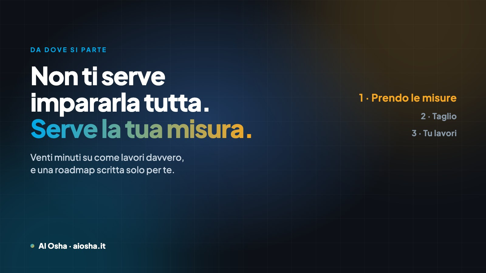

Da dove iniziare con l'intelligenza artificiale nel tuo lavoro
Il problema non è che non ci sono informazioni: è che ce ne sono troppe, e sono tutte taglia unica. Quello che manca è sapere quali due o tre cose servono a te. E si capisce in venti minuti di confronto, non in cinquanta video.

In sintesi
Quasi nessuno si blocca per mancanza di strumenti: ci si blocca perché non si sa da dove partire. I tutorial sono infiniti e generici, e l'intelligenza artificiale che va bene a un commercialista sta larga a un idraulico. Quello che sblocca è un confronto breve su come lavori davvero, con chi usa questi strumenti ogni giorno: venti minuti e una roadmap scritta per la tua attività. Costa 29 € fino al 31 ottobre 2026 (dal 1° novembre 49 €), ed è il modo più economico per non perdere tre mesi a provare la cosa sbagliata.
Hai già provato. Hai aperto ChatGPT, hai scritto qualcosa, ti ha risposto una cosa generica che non ti serviva, e hai chiuso la scheda pensando "sarà utile a qualcun altro". Oppure hai guardato tre video, hai salvato dieci post, e adesso hai una cartella di roba che non hai mai aperto.
Non è colpa tua e non è colpa dello strumento. È che stai cercando di imparare una materia quando ti serve risolvere un problema. Sono due cose diverse e si affrontano in modo diverso.
Il problema non è la mancanza di informazioni
Di materiale sull'intelligenza artificiale ce n'è più di quanto se ne possa leggere in una vita. Il punto è che è tutto scritto per tutti, e "per tutti" vuol dire per nessuno in particolare.
Un esempio concreto: "usa l'AI per le mail" è un consiglio vero e inutile allo stesso tempo. Perché se tu sei un'impresa di scavi, le mail non sono il tuo problema — i preventivi lo sono. Se sei una fioraia, non sono i preventivi — sono le descrizioni dei prodotti e le risposte su WhatsApp. Se sei un commercialista, non è nessuna delle due — è leggere e riassumere documenti.
Il consiglio giusto, dato alla persona sbagliata, diventa una perdita di tempo. E il tempo è esattamente la cosa che stavi cercando di recuperare.
I tre modi in cui ci si blocca, quando si parte da soli
- Si parte dallo strumento invece che dal problema Esce un nome nuovo, lo provi, non sai cosa chiedergli, lo lasci lì. Il mese dopo ne esce un altro. Si può andare avanti anni così, con la sensazione di essere sempre indietro.
- Si automatizza la cosa sbagliata Capita spessissimo: uno passa due settimane a sistemare una cosa che gli costava venti minuti a settimana, e intanto continua a perdere due ore ogni sera su quella che non ha toccato. Il criterio non è "cosa si può automatizzare", è "cosa mi mangia più ore".
- Si molla dopo due settimane Perché i primi tentativi danno risultati mediocri — e sono mediocri per un motivo preciso: l'AI non sa niente di te. Non conosce i tuoi prezzi, il tuo modo di parlare, i tuoi clienti, quello che non fai. Finché non glielo dai, scrive come un dépliant.
Cosa fa un confronto che un video non può fare
Un video non può guardare il tuo preventivo. Non può vedere che le tue mail hanno tutte la stessa struttura e che quella struttura si può trasformare in un modello in cinque minuti. Non può dirti "questa cosa qui lasciala stare, non ne vale la pena" — e questa, spesso, è l'informazione che vale di più.
In un confronto diretto succedono tre cose che altrove non succedono:
- Si guardano le cose vere. Non esempi: il tuo preventivo, la tua mail, il tuo foglio di calcolo. È lì che si vede dove sta il tempo che perdi.
- Si scarta. Chi usa questi strumenti ogni giorno sa anche quali non ti servono. Togliere dieci strade sbagliate vale più che aggiungerne una giusta.
- Si mette in ordine. Non "ecco venti cose che puoi fare", ma "comincia da questa, poi questa, e la terza solo dopo che le prime due funzionano".
Ogni lavoro ha le sue misure. L'intelligenza artificiale che va bene a un commercialista sta larga a un idraulico e stretta a una fioraia. Per questo prima prendo le misure, e poi taglio.
Perché conta con chi lo fai
Essere "esperto di intelligenza artificiale" non è un titolo regolamentato: può usarlo chiunque. Quindi il criterio non è la parola, è l'uso quotidiano.
Io l'AI la uso ogni giorno per il mio lavoro, non per parlarne: ci ho pubblicato quattordici libri con la mia casa editrice, ci ho gestito un evento con oltre mille persone in due, ci lavoro con imprese di scavi, accademie, fondazioni e attività della Valdinievole. Padroneggio decine di strumenti — e proprio per questo il mio mestiere non è mostrarteli tutti: è sapere quali due o tre servono a te.
C'è una differenza semplice fra chi spiega e chi fa: chi fa conosce anche i punti dove questa roba non funziona, e te li dice prima invece che dopo.
Com'è fatta la Diagnosi
L'ho chiamata così perché è esattamente quello: si guarda com'è messa l'attività e si dice cosa conviene fare, in che ordine.
| Momento | Cosa succede |
|---|---|
| Prima | Rispondi a otto domande sul tuo lavoro: cosa fai, cosa ti mangia più tempo, cosa hai già provato |
| Venti minuti su Zoom | Mi fai vedere come lavori davvero. Non serve preparare niente: bastano un preventivo, due mail tipiche, il foglio che usi |
| Dopo | Ti scrivo la roadmap: cosa automatizzare per primo, in che ordine, con quali strumenti, e una stima delle ore che ti tornano |
| Che cosa ti resta | Un documento scritto per la tua attività, non un elenco di consigli. Prima di parlarci non esisteva |
Non è un corso e non è una vendita mascherata: alla fine della roadmap c'è scritto cosa puoi fare da solo — che di solito è la parte più grossa — e cosa invece conviene farsi fare.
La Diagnosi AI su misura
Venti minuti con me e la tua roadmap scritta. Paghi con carta, poi ti scrivo io per fissare l'orario.
Prenota la tua Diagnosi → Vuoi prima vedere com'è fatta? Guarda la pagina della Diagnosi — c'è anche un esempio di roadmap.Quanto costa, messo in prospettiva
In Italia la consulenza sull'intelligenza artificiale sta fra i 50 e i 150 euro l'ora, le giornate fra 500 e 1.500, e i progetti strutturati per le PMI partono da decine di migliaia di euro. Sono cifre giuste per chi ha processi da riprogettare e un ufficio IT.
Se invece hai una piccola attività, il problema non è progettare: è decidere da dove partire senza bruciare tre mesi. Per quello non serve un progetto: serve mezz'ora ben spesa. È il motivo per cui la Diagnosi costa quanto una cena e non quanto una consulenza: non è una consulenza completa, è la parte che ti sblocca.
Se poi serve il lavoro vero, si parla di sessioni di lavoro — e, se sei un'impresa della provincia di Pistoia o Prato, quest'anno c'è un bando che ne paga metà.
Per chi non è
Te lo dico perché ci tengo più a non farti spendere male 29 euro che a incassarli:
- Se vuoi imparare tutto per bene, con calma e per conto tuo, ti serve il corso, non venti minuti.
- Se hai già chiaro cosa vuoi fare e ti manca solo l'esecuzione, salta la Diagnosi e prendi direttamente una sessione di lavoro.
- Se hai duecento dipendenti e processi da riprogettare, ti serve un progetto strutturato, e la Diagnosi è troppo poco.
Per tutti gli altri — artigiani, professionisti, partite IVA, piccole imprese — venti minuti sono il punto di partenza giusto, perché il primo passo non è tecnico: è capire dove guardare.
Hai un dubbio prima di prenotare?
Scrivimi su WhatsApp e raccontami in due righe che lavoro fai. Ti dico onestamente se la Diagnosi ha senso per te, e se non ce l'ha te lo dico lo stesso.
💬 Scrivimi su WhatsApp Rispondo io, non un'AI. 331 388 3929Domande frequenti
Da dove si inizia con l'intelligenza artificiale in una piccola attività?
Non da uno strumento, ma da un'attività ripetitiva che ti mangia ore ogni settimana: preventivi, mail sempre uguali, rapportini, risposte ai clienti. Si parte da lì perché il risultato si vede subito. Scegliere prima lo strumento e poi cercargli un uso è l'errore più comune.
Meglio un corso o un confronto diretto?
Dipende da cosa ti manca. Il corso serve se vuoi costruirti un metodo completo con i tuoi tempi. Il confronto breve serve se ti sei arenato o se devi decidere da dove partire: in venti minuti si guarda come lavori e si esce con un ordine di priorità, non con una lista di strumenti.
Quanto costa un'analisi della mia attività?
La Diagnosi costa 29 € fino al 31 ottobre 2026; dal 1° novembre torna a 49 €. Comprende venti minuti su Zoom e la roadmap scritta, consegnata dopo la call. Per confronto, le tariffe di mercato della consulenza AI in Italia partono da 50-150 € l'ora.
Cosa devo portare?
Niente di preparato: le cose vere del tuo lavoro. Un preventivo recente, due o tre mail tipiche, il foglio di calcolo che usi, il listino se ce l'hai. Servono perché l'AI diventa utile quando lavora sui tuoi documenti e con il tuo modo di parlare.
L'AI serve davvero a chi ha una piccola attività?
È dove rende di più, perché il titolare fa tutto e ogni ora recuperata è un'ora vendibile. Secondo l'ISTAT le imprese italiane che usano l'AI sono raddoppiate in un anno (8,2% → 16,4%), e chi rinuncia indica come ostacolo principale la mancanza di competenze, non il costo.